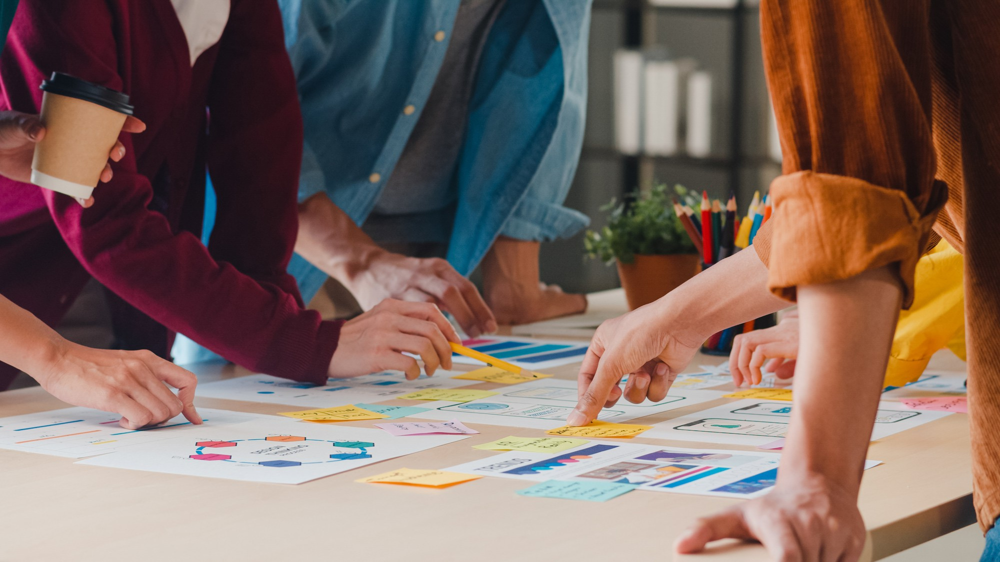

Reporter
Yg bertugas utk menulis menganalisis dan melaporkan suatu peristiwa kpd khalayak umum melalui media sosial
Fotografer
Bertugas dlm merekap peristiwa dlm bentuk gambar utk berbagai objek seperti seseorang, tempat, dan peristiwa menggunakan kamera
Editor
Sbg editr atau penyunting Bertanggung jawab terhadap keselurahan fungsi (editing) pada suatu naskah penerbitan maupun media

Kreatif
Bertugas dlm Menciptakan dan menemukan sesuatu